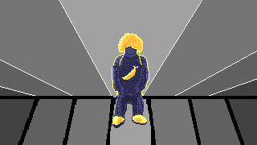

Yellow Hair, Yellow Shoes, Yellow Bags, Sitting on the refrigerator ∘ Pixel Art ∘ 1 March 2026 ∘ 320x180px ∘ Made by Munir Paviwala
The Sound
Syrupy synth melodies meets crisp electronic percussion.
This is a "neon yellow"
soundscape—slow
enough to breathe, but upbeat enough to move to.
It hits that rare sweet spot between a
chill-out and vibey.
The Visuals
Set against the corporate greys of a standard supermarket, the visual is yellow fresh.
We're
talking vibrant yellow hair, bags, and shoes slicing through the grey aisles.
The video edits use a rhythmic, GIF-like back-and-forth movement that turns every frame into a
loopable moment of art.
One Line Recommendation
If you're looking for a track that feels like sunshine in a concrete jungle, this is it.